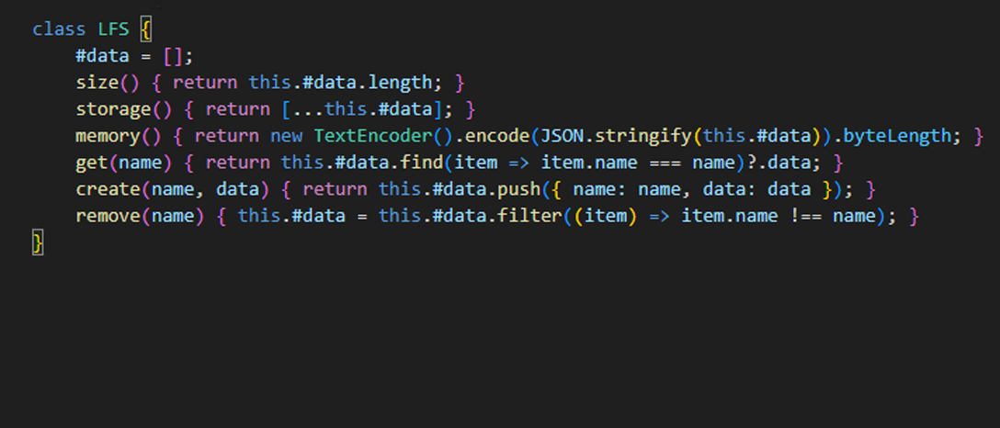
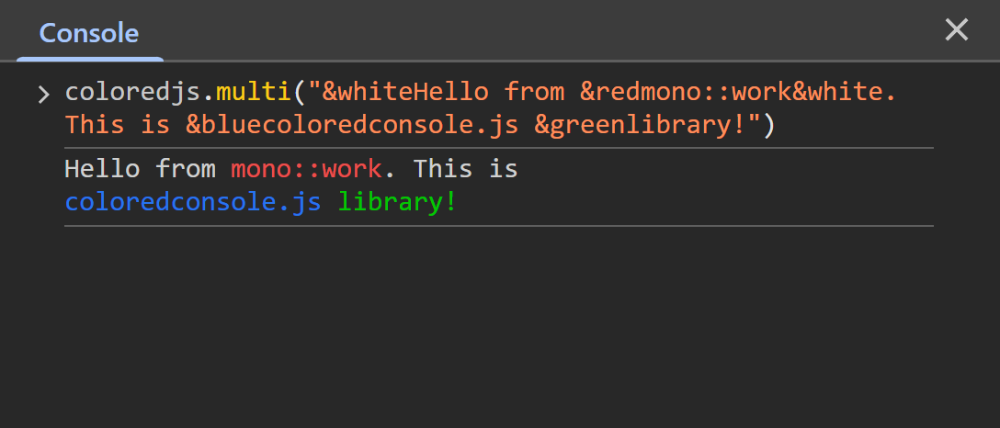

python · java · webdesign · javascript · photoshop · offsec · defsec · opsec · vegas pro

Маленькая библиотека локальной файловой системы в оперативной памяти для переменных.

Библиотека для цветного вывода в Chrome DevTools Console.
Каждый проект я рассматриваю как систему — от разработки визуальных образов до backend-логики. Это портфолио отражает философию «чёрного и белого»: убирать лишнее, усиливать главное.